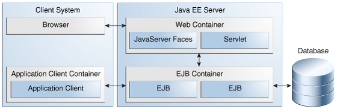
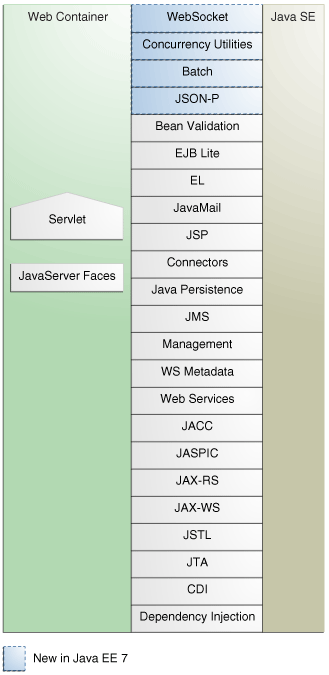
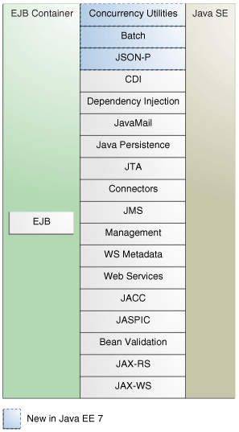
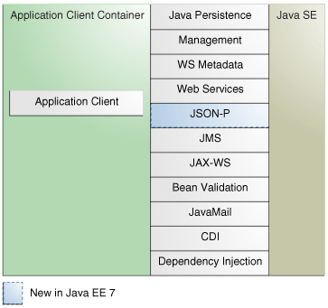

Copyright © 2017, Oracle and/or its affiliates. All rights reserved.
Copyright © 2017, Oracle and/or its affiliates. All rights reserved.
|
Java Platform, Enterprise Edition (Java EE) 8 The Java EE Tutorial E63026-01 |
| Previous | Next | Contents |
Figure 1-6 shows the relationships among the Java EE containers.

Figure 1-7 shows the availability of the Java EE 7 APIs in the web container.

Figure 1-8 shows the availability of the Java EE 7 APIs in the EJB container.

Figure 1-9 shows the availability of the Java EE 7 APIs in the application client container.

The following sections give a brief summary of the technologies required by the Java EE platform and the APIs used in Java EE applications.
An Enterprise JavaBeans (EJB) component, or enterprise bean, is a body of code that has fields and methods to implement modules of business logic. You can think of an enterprise bean as a building block that can be used alone or with other enterprise beans to execute business logic on the Java EE server.
Enterprise beans are either session beans or message-driven beans.
A session bean represents a transient conversation with a client. When the client finishes executing, the session bean and its data are gone.
A message-driven bean combines features of a session bean and a message listener, allowing a business component to receive messages asynchronously. Commonly, these are Java Message Service (JMS) messages.
In the Java EE 7 platform, new enterprise bean features include the following:
Asynchronous local session beans in EJB Lite
Nonpersistent timers in EJB Lite
The Java EE 7 platform requires Enterprise JavaBeans 3.2 and Interceptors 1.2. The Interceptors specification is part of the EJB specification.
Java Servlet technology lets you define HTTP-specific servlet classes. A servlet class extends the capabilities of servers that host applications accessed by way of a request-response programming model. Although servlets can respond to any type of request, they are commonly used to extend the applications hosted by web servers.
In the Java EE 8 platform, new Java Servlet technology features include the following:
HTTP/2 server push
Servlet Mapping API
The Java EE 8 platform requires Servlet 4.0
JavaServer Faces technology is a user interface framework for building web applications. The main components of JavaServer Faces technology are as follows:
A GUI component framework.
A flexible model for rendering components in different kinds of HTML
or different markup languages and technologies. A Renderer object
generates the markup to render the component and converts the data
stored in a model object to types that can be represented in a view.
A standard RenderKit for generating HTML 4.01 markup.
The following features support the GUI components:
Input validation
Event handling
Data conversion between model objects and components
Managed model object creation
Page navigation configuration
Expression Language (EL)
All this functionality is available using standard Java APIs and XML-based configuration files.
In the Java EE 8 platform, new features of JavaServer Faces technology include the following:
Direct support for WebSockets via the new <f:websocket> tag
Class-level bean validation via the new <f:validateWholeBean> tag
A CDI compatible @ManagedProperty annotation
Enhanced component search expression framework
The Java EE 8 platform requires JavaServer Faces 2.3 and Expression Language 3.0.
For an excellent summary of what’s new in JSF 2.3, see Arjan Tijms'
weblog at https://javaserverfaces.github.io/users.html.
JavaServer Pages (JSP) technology lets you put snippets of servlet code directly into a text-based document. A JSP page is a text-based document that contains two types of text:
Static data, which can be expressed in any text-based format, such as HTML or XML
JSP elements, which determine how the page constructs dynamic content
For information about JSP technology, see the The Java EE 5 Tutorial at
http://docs.oracle.com/javaee/5/tutorial/doc/.
The Java EE 7 platform requires JavaServer Pages 2.3 for compatibility with earlier releases but recommends the use of Facelets as the display technology in new applications.
The JavaServer Pages Standard Tag Library (JSTL) encapsulates core functionality common to many JSP applications. Instead of mixing tags from numerous vendors in your JSP applications, you use a single, standard set of tags. This standardization allows you to deploy your applications on any JSP container that supports JSTL and makes it more likely that the implementation of the tags is optimized.
JSTL has iterator and conditional tags for handling flow control, tags for manipulating XML documents, internationalization tags, tags for accessing databases using SQL, and tags for commonly used functions.
The Java EE 7 platform requires JSTL 1.2.
The Java Persistence API (JPA) is a Java standards–based solution for persistence. Persistence uses an object/relational mapping approach to bridge the gap between an object-oriented model and a relational database. The Java Persistence API can also be used in Java SE applications outside of the Java EE environment. Java Persistence consists of the following areas:
The Java Persistence API
The query language
Object/relational mapping metadata
The Java EE 7 platform requires Java Persistence API 2.1.
The Java Transaction API (JTA) provides a standard interface for demarcating transactions. The Java EE architecture provides a default auto commit to handle transaction commits and rollbacks. An auto commit means that any other applications that are viewing data will see the updated data after each database read or write operation. However, if your application performs two separate database access operations that depend on each other, you will want to use the JTA API to demarcate where the entire transaction, including both operations, begins, rolls back, and commits.
The Java EE 7 platform requires Java Transaction API 1.2.
The Java API for RESTful Web Services (JAX-RS) defines APIs for the development of web services built according to the Representational State Transfer (REST) architectural style. A JAX-RS application is a web application that consists of classes packaged as a servlet in a WAR file along with required libraries.
The Java EE 7 platform requires JAX-RS 2.0.
Managed Beans, lightweight container-managed objects (POJOs) with minimal requirements, support a small set of basic services, such as resource injection, lifecycle callbacks, and interceptors. Managed Beans represent a generalization of the managed beans specified by JavaServer Faces technology and can be used anywhere in a Java EE application, not just in web modules.
The Managed Beans specification is part of the Java EE 7 platform specification (JSR 342). The Java EE 7 platform requires Managed Beans 1.0.
Contexts and Dependency Injection for Java EE (CDI) defines a set of contextual services, provided by Java EE containers, that make it easy for developers to use enterprise beans along with JavaServer Faces technology in web applications. Designed for use with stateful objects, CDI also has many broader uses, allowing developers a great deal of flexibility to integrate different kinds of components in a loosely coupled but typesafe way.
The Java EE 7 platform requires CDI 1.1.
Dependency Injection for Java defines a standard set of annotations (and one interface) for use on injectable classes.
In the Java EE platform, CDI provides support for Dependency Injection. Specifically, you can use injection points only in a CDI-enabled application.
The Java EE 7 platform requires Dependency Injection for Java 1.0.
The Bean Validation specification defines a metadata model and API for validating data in JavaBeans components. Instead of distributing validation of data over several layers, such as the browser and the server side, you can define the validation constraints in one place and share them across the different layers.
The Java EE 7 platform requires Bean Validation 1.1.
The Java Message Service (JMS) API is a messaging standard that allows Java EE application components to create, send, receive, and read messages. It enables distributed communication that is loosely coupled, reliable, and asynchronous.
In the platform, new features of JMS include the following.
A new, simplified API offers a simpler alternative to the previous
API. This API includes a JMSContext object that combines the functions
of a Connection and a Session.
All objects with a close method implement the
java.lang.Autocloseable interface so that they can be used in a Java
SE 7 try-with-resources statement.
The Java EE 7 platform requires JMS 2.0.
The Java EE Connector Architecture is used by tools vendors and system integrators to create resource adapters that support access to enterprise information systems that can be plugged in to any Java EE product. A resource adapter is a software component that allows Java EE application components to access and interact with the underlying resource manager of the EIS. Because a resource adapter is specific to its resource manager, a different resource adapter typically exists for each type of database or enterprise information system.
The Java EE Connector Architecture also provides a performance-oriented, secure, scalable, and message-based transactional integration of Java EE platform–based web services with existing EISs that can be either synchronous or asynchronous. Existing applications and EISs integrated through the Java EE Connector Architecture into the Java EE platform can be exposed as XML-based web services by using JAX-WS and Java EE component models. Thus JAX-WS and the Java EE Connector Architecture are complementary technologies for enterprise application integration (EAI) and end-to-end business integration.
The Java EE 7 platform requires Java EE Connector Architecture 1.7.
Java EE applications use the JavaMail API to send email notifications. The JavaMail API has two parts:
An application-level interface used by the application components to send mail
A service provider interface
The Java EE platform includes the JavaMail API with a service provider that allows application components to send Internet mail.
The Java EE 7 platform requires JavaMail 1.5.
The Java Authorization Contract for Containers (JACC) specification defines a contract between a Java EE application server and an authorization policy provider. All Java EE containers support this contract.
The JACC specification defines java.security.Permission classes that
satisfy the Java EE authorization model. The specification defines the
binding of container-access decisions to operations on instances of
these permission classes. It defines the semantics of policy providers
that use the new permission classes to address the authorization
requirements of the Java EE platform, including the definition and use
of roles.
The Java EE 7 platform requires JACC 1.5.
The Java Authentication Service Provider Interface for Containers (JASPIC) specification defines a service provider interface (SPI) by which authentication providers that implement message authentication mechanisms may be integrated in client or server message-processing containers or runtimes. Authentication providers integrated through this interface operate on network messages provided to them by their calling containers. The authentication providers transform outgoing messages so that the source of each message can be authenticated by the receiving container, and the recipient of the message can be authenticated by the message sender. Authentication providers authenticate each incoming message and return to their calling containers the identity established as a result of the message authentication.
The Java EE 7 platform requires JASPIC 1.1.
WebSocket is an application protocol that provides full-duplex communications between two peers over TCP. The Java API for WebSocket enables Java EE applications to create endpoints using annotations that specify the configuration parameters of the endpoint and designate its lifecycle callback methods.
The WebSocket API is new to the Java EE 7 platform. The Java EE 7 platform requires Java API for WebSocket 1.0.
JSON is a text-based data exchange format derived from JavaScript that is used in web services and other connected applications. The Java API for JSON Processing (JSON-P) enables Java EE applications to parse, transform, and query JSON data using the object model or the streaming model.
JSON-P is new to the Java EE 7 platform. The Java EE 7 platform requires JSON-P 1.0.
Concurrency Utilities for Java EE is a standard API for providing asynchronous capabilities to Java EE application components through the following types of objects: managed executor service, managed scheduled executor service, managed thread factory, and context service.
Concurrency Utilities for Java EE is new to the Java EE 7 platform. The Java EE 7 platform requires Concurrency Utilities for Java EE 1.0.
Batch jobs are tasks that can be executed without user interaction. The Batch Applications for the Java Platform specification is a batch framework that provides support for creating and running batch jobs in Java applications. The batch framework consists of a batch runtime, a job specification language based on XML, a Java API to interact with the batch runtime, and a Java API to implement batch artifacts.
Batch Applications for the Java Platform is new to the Java EE 7 platform. The Java EE 7 platform requires Batch Applications for the Java Platform 1.0.
| Previous | Next | Contents |
Copyright © 2017, Oracle and/or its affiliates. All rights reserved.